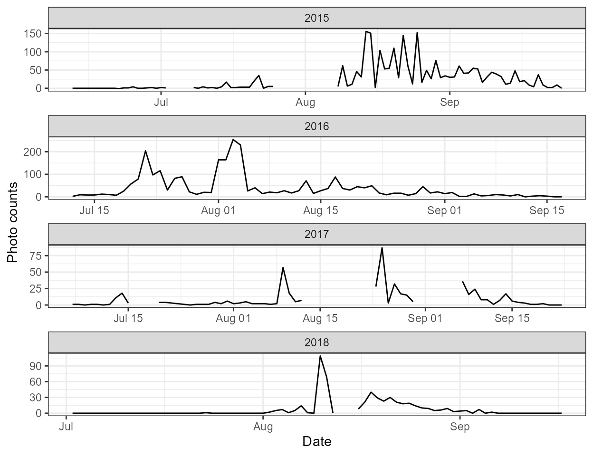
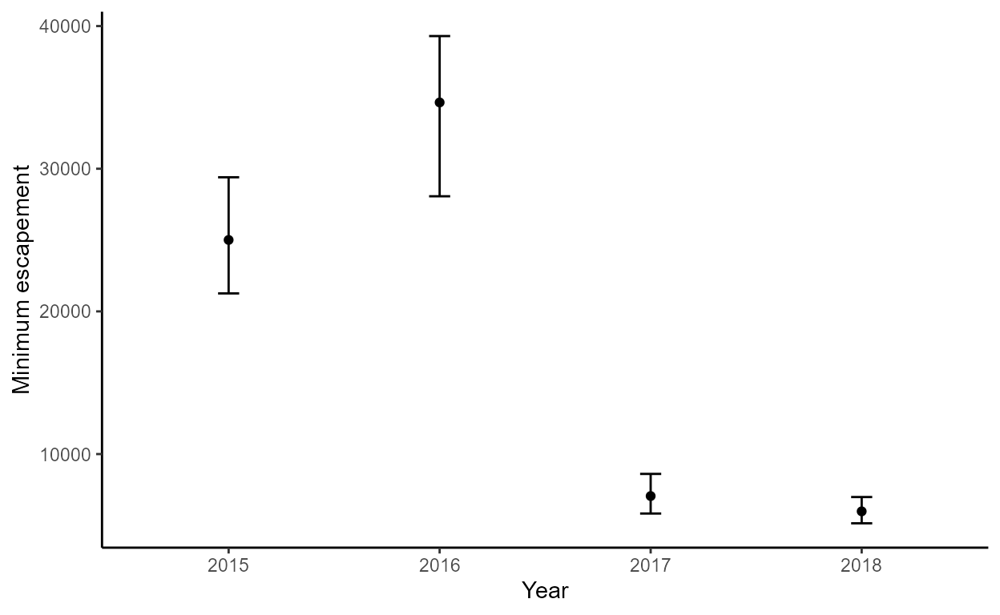
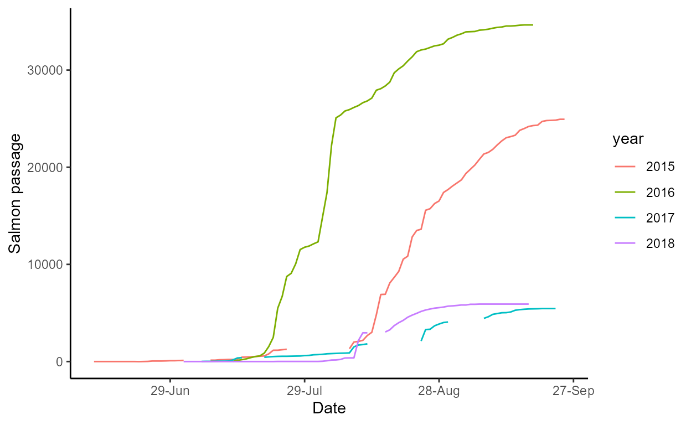

Getting Started
intro.RmdWhat is escapement?
escapement is an R package developed by the USFWS Alaska
Inventory and Monitoring Program for estimating salmon escapement from
photo and video double-observer count data. It was developed for
estimating sockeye salmon minimum escapement for the Alalura River at
Kodiak National Wildlife Refuge, Alaska. The functions follow methods
published in Deacy et
al. 2016.
What’s required?
The escapement package requires several programs to
function:
R (>=4.0)
-
the
tinytexpackage. To install it from R:-
if (!require("tinytex")) install.packages("tinytex")
tinytex::install_tinytex()
-
To install and load the package:
if (!require("devtools")) install.packages("devtools")
devtools::install_github("USFWS/escapement", ref = "master", build_vignettes = TRUE)
library(escapement)What’s inside?
The package includes functions to:
Import a raw CSV file containing hourly counts of salmon quantified from photos and videos (
import_format()),Evaluate a candidate list of competing models (linear, segmented, polynomial, and polynomial segmented) to estimate salmon escapement (
model_escapement()),Generate tables and plots of the results, and
Produce a dynamic parameterized report (PDF) of the results (
run_report()).
Help!
To find a help file for any function in escapement, type
? and the name of the function. For example, to get help on
how to use the import_format() function, type
?import_format.
How do I use it?
There are two general approaches to using escapement and
selecting which approach to take depends on your needs. The first
approach (“step-wise”), consists of using individual functions
to work through the steps of importing and formatting input data,
performing a statistical analysis, and creating tables and plots. This
approach would be favored if the user is interested in examining the
details of the analysis, would like to perform additional analyses not
included in the package, or would like to export the tables and plots
for a customized reporting format. The second approach (“all in
one”) performs all the above steps and compiles the results into a
PDF report with run_report() function. This approach would
be favored for annual reporting of results, specific to Kodiak Refuge’s
Akalura salmon escapement survey. Below are more details on the two
approaches.
The “stepwise” approach
Step 1: Importing and formatting data using
import_format()
The first step to using any functions in escapement is
to import and format data. This is done using the
import_format() function, which takes in a CSV of data and
returns a formatted R data frame. The function requires a file directory
path to a CSV containing properly formatted data. The input CSV should
contain the following three columns:
-
dateSequential hourly date values (YYYY-MM-DD hh:mm:ss) that range from the beginning of a summer season to the end of a summer season. Multiple years of data within a single CSV are acceptable. -
photoNumeric values describing the number of salmon counted from photos. Any missing values should containNA. -
videoNumeric values describing the number of salmon counted from videos. Any missing values should containNA.
You can find the file path to an example of a properly formatted CSV by entering the following into the console:
system.file("extdata", "salmon_counts.csv", package = "escapement")
To import the example CSV data using the import_format()
function, and store the output as an R data frame dat in
the Global Environment:
dat <- import_format(system.file("extdata", "salmon_counts.csv", package = "escapement"))
You can then view dat data frame with
View(dat).
dat <- import_format(system.file("extdata", "salmon_counts.csv", package = "escapement"))
head(dat)
#> date photo video julian_day year
#> 1 2015-06-12 01:00:00 0 NA 163 2015
#> 2 2015-06-12 02:00:00 0 NA 163 2015
#> 3 2015-06-12 03:00:00 0 NA 163 2015
#> 4 2015-06-12 04:00:00 0 NA 163 2015
#> 5 2015-06-12 05:00:00 0 NA 163 2015
#> 6 2015-06-12 06:00:00 0 NA 163 2015Step 2: Analysis and model selection
Once you have a formatted data frame of hourly photo and video counts
(See Step 1 for how to import and format data), you can analyze the data
using escapement. This is done using two functions:
model_escapement() and boot_escapement()
model_escapement()
This function takes in a formatted data frame generated from
import_format(), creates a list of candidate models,
evaluates these models \(\Delta\)AICc,
and returns a list of objects described in detail below.
Analyzing data in our dat data frame that we imported
above would be done using:
our_models <- model_escapement(dat)Taking a look inside the resulting our_models list:
summary(our_models)
#> Length Class Mode
#> models 4 -none- list
#> aic_table 8 aictab list
#> top_model 13 lm listFrom this you can see that the model_escapement()
function requires an R data frame (returned from
import_format()) and returns a list of three objects:
-
models
A list of candidate models. The current version ofescapementruns four candidate models: a linear, polynomial, linear segmented, and polynomial segmented model. Continuing with our example above, you can view a summary of a model by typing the name of the list returned bymodel_escapement, selecting themodelselement, and then selecting the name of the model. For example:
summary(our_models$models$linear)
#>
#> Call:
#> lm(formula = video ~ photo - 1, data = datud)
#>
#> Residuals:
#> Min 1Q Median 3Q Max
#> -236.35 -19.95 -0.98 13.98 412.89
#>
#> Coefficients:
#> Estimate Std. Error t value Pr(>|t|)
#> photo 13.9849 0.3642 38.4 <2e-16 ***
#> ---
#> Signif. codes: 0 '***' 0.001 '**' 0.01 '*' 0.05 '.' 0.1 ' ' 1
#>
#> Residual standard error: 50.38 on 304 degrees of freedom
#> (6683 observations deleted due to missingness)
#> Multiple R-squared: 0.8291, Adjusted R-squared: 0.8285
#> F-statistic: 1475 on 1 and 304 DF, p-value: < 2.2e-16-
aic_table
The AICc table of the candidate model set.
our_models$aic_table
#>
#> Model selection based on AICc:
#>
#> K AICc Delta_AICc AICcWt Cum.Wt LL
#> Polynomial 3 3218.98 0.00 0.65 0.65 -1606.45
#> Segmented polynomial 4 3220.26 1.28 0.35 1.00 -1606.07
#> Linear 2 3259.49 40.50 0.00 1.00 -1627.72
#> Segmented 3 3260.30 41.31 0.00 1.00 -1627.11-
top_model
The most parsimonious model, based on \(\Delta\)AICc.
our_models$top_model
#>
#> Call:
#> lm(formula = video ~ photo + I(photo^2) - 1, data = datud)
#>
#> Coefficients:
#> photo I(photo^2)
#> 9.9985 0.1173boot_escapement()
The boot_escapement function takes a data frame
(produced from import_format() and a list of models
(produced from model_escapement() and calculates 95%
confidence intervals around the point estimates of salmon escapement
estimates from the top model. Running this function returns a list
containing two objects: a summary table of annual escapement estimates
with 95% CIs (summary) and the raw bootstrapped results
(raw_boots):
boots <- boot_escapement(dat, our_models)
#> Total time: 6.26 sec elapsed
#> Total time: 5.77 sec elapsed
#> Total time: 5.78 sec elapsed
#> Total time: 5.61 sec elapsed
summary(boots)
#> Length Class Mode
#> summary 4 data.frame list
#> raw_boots 2 -none- listHere’s the summary table from our example:
boots$summary
#> year escapement lower_ci upper_ci
#> 1 2015 25008.48 21261.338 29401.663
#> 2 2016 34646.56 28069.384 39298.884
#> 3 2017 7057.08 5832.223 8609.050
#> 4 2018 5984.83 5146.577 6987.694You can explore the raw results by digging into
raw_boots. This list contains how the bootstraps were
called, the model specified, and a matrix with a row for each bootstrap
replicate of the results. For more information, see the help file for
the boot function in the boot package here.
Step 3: Creating tables and plots
The third step in the step-wise approach is creating tables and plots
of results. See above (aic_table) for a summary table
of AICc results. Below is a brief description of the custom plotting
functions in escapement.
explore_plots()
This function returns a list containing two ggplot2
plots. The first (photo_counts) is series of line plot
of the raw hourly photo counts over time, grouped by year. The second
(hourly_counts) is a plot of the average photo counts
for each hour of day summarized by year.
p <- explore_plots(dat)
p$photo_counts
p$hourly_countsplot_topmodel()
This function uses the model results from
model_escapement and returns a ggplot2 scatter
plot of video and photo counts with a fitted line from the top
model.
plot_topmodel(our_models)plot_boot_escapement()
This function used the bootstrap results from
boot_estimates() and returns a list of ggplot2
plots: density_estimates and
min_escapement.
The density_estimates plot is a density plot of the
distribution of bootstrapped estimates of annual salmon escapement
grouped by year:
p <- plot_boot_escapement(boots)
p$density_estimates
The min_escape plot shows minimum escapement point
estimates and 95% CI bars, grouped by year:
p$min_escape
plot_daily()
This function uses the salmon count data frame (from
import_format()) and the model results from
model_escapement to generate a list of ggplot2
plots (daily and cumul_daily).
The daily plot shows estimates of daily salmon passage
over time, grouped by year:
p <- plot_daily(dat, our_models)
p$dailyThe cumul_daily plot shows estimates of cumulative daily
salmon passage over time, grouped by year:
p$cumul_daily
plot_hourly()
This function uses the salmon count data frame (from
import_format()) and the model results from
model_escapement to generate a ggplot2 faceted
plot showing average hourly estimates of salmon passage within a day,
grouped by year.
plot_hourly(dat, our_models)The “all-in-one” approach: a report
This is a function developed to generate a rmarkdown report that summarizes annual salmon escapement results. It relies on many of the above functions for importing, formatting, analyzing, performing model selection, and generating tables and figures. To run the function, simply run:
This will open a Shiny interface that looks like this:
If necessary, edit the default parameter values for the report title, subtitle, author, refuge, email, and phone number.
Then, under “Input dataset”, browse to the location of the csv file
containing your hourly photo and video count data (the csv should be
formatted as required above for the import_format
function).
Next, under “Discussion and Recommendations”, browse to a txt file
containing your discussion and recommendations section of the report. It
is recommended to leave this input empty when you first run a report.
After you have reviewed the results in initial report, then draft a
discussion and recommendations section in MS Word. Save a copy of this
Word document as a txt file. NOTE: do this by opening a new txt file,
copying the text from your Word document into this txt file, and saving
it. You then rerun run_report with your discussion and
recommendations included.
Adding new references to the discussion and recommendations sections
If you have citations in your discussion and recommendations section
that are not found elsewhere in the document, you will need to add these
references to the bibliography. To do this, you will need to update the
default bibtex file located in the escapement package. You
can locate that file with the following command:
system.file("rmd", "bibliography.bibtex", package = "escapement")
#> [1] "C:/Users/mcobb/AppData/Local/Temp/1/RtmpqCq8wJ/temp_libpath1578432c4190/escapement/rmd/bibliography.bibtex"This default bibtex file can be edited manually using a text editor or using a bibliographic software package (e.g., EndNote). Once the new references have been added to the default bibtex file, replace the default bibtex file with the updated version.
You cite a reference in the body of the discussion and recommendation
section by adding [@reference_id] to the end of the
sentence, where reference_id is the reference ID listed at the top of
each bibtex record. For example, to cite Deacy et. al 2016, you would
add the record ID for that article (deacy_etal_2016) into the body of
the text (e.g.,“We following established methods
[@deacy_etal_2016].”). When the bibtex file is updated,
this approach to inline citations will automatically add the citation to
the bibliography section.